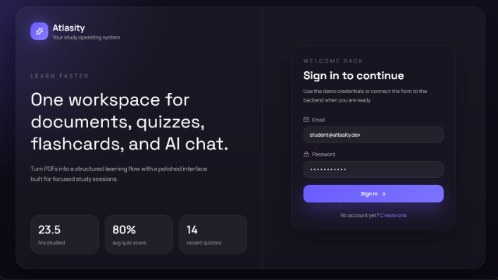

Converts uploads into study cards running SuperMemo (SM-2) scheduling intervals

AI-powered learning platform that converts uploaded PDFs into interactive study workflows. Engineered a production-style MERN application with secure authentication, document ingestion, context-aware Q&A, flashcard generation, quiz generation, and voice-enabled search. Built end-to-end data flow from file upload to AI output using Google Gemini, optimized for scalable content processing and retrieval.
Incoming files undergo extraction, feeding text nodes to the Gemini API to extract high-density learning objectives before scheduling cards via interval formulas.
Multer upload & text extraction
Q&A cards compilation
Interval calculation algorithms
Web Speech hands-free runs
Once generated, users can trigger hands-free study loops. The Web Speech API dictates flashcard questions, listening for user voice answers before grading them.
Textbook PDF files contain complex layout structures (multi-column text, headers, formulas) that corrupt standard top-to-bottom text readers.
Raw text extractors read pages horizontally, merging unrelated columns together and destroying sentence structures, which leads to corrupted flashcards.
We implemented a layout-aware PDF parser in the Node middleware. It analyzes page elements, bounding boxes, and column coordinates. The parser reconstructs the text flow vertically down individual columns before generating text blocks, ensuring that the input passed to the Gemini API preserves logical sentence structures and context.